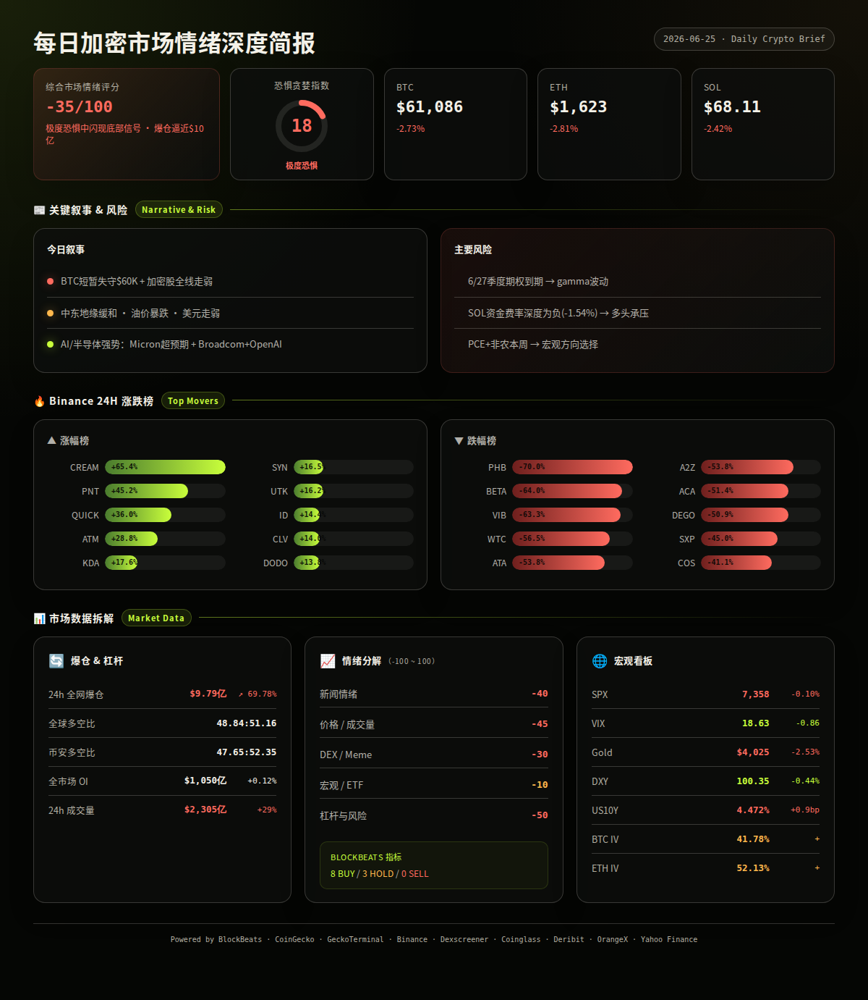
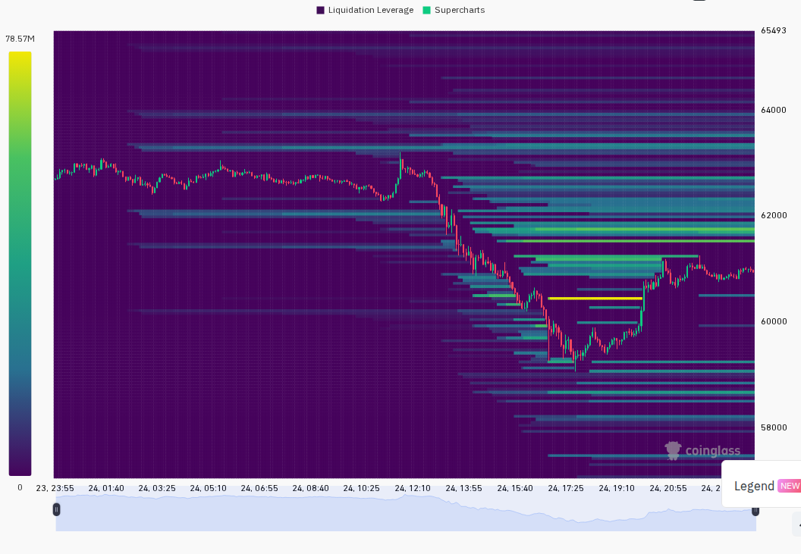
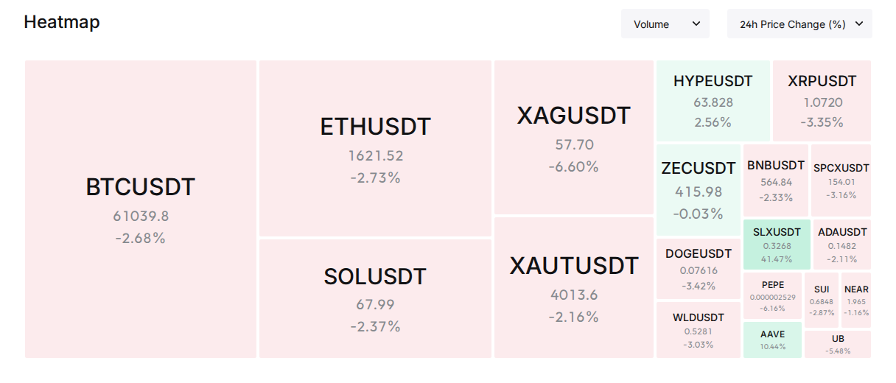

━━━━━━━━━━━━━━━━━━━━━━
⏰ 1. 24小时变化:
恐惧与贪婪指数 18 (极度恐惧)
BTC 61086.21 -2.73%
ETH 1622.87 -2.81%
SOL 68.11 -2.42%
VIX 18.63 -0.86 正常区间
成交量 $2305亿 +29.00%
DXY 100.35 -0.44%
爆仓 $9.79亿 +69.78%
━━━━━━━━━━━━━━━━━━━━━━
—— BTC / ETH / SOL ——
大盘延续下跌趋势，BTC 短暂跌破 6 万美元关口，ETH 同步失守 1600 美元，全网爆仓金额激增近 70%，市场出现明显的恐慌性去杠杆。
信息 1：BTC 一度跌破 6 万美元，随后反弹至 6.1 万以上；ETH 跌破 1600 美元后回到 1620 附近；SOL 在 68 美元附近震荡。BTC 已跌破 Rainbow Chart 底部，进入所谓"Bitcoin Obituaries"区域，历史上这通常指向底部区间而非顶部。(BlockBeats)
信息 2：过去 24 小时全网爆仓 $9.79 亿，较前日激增 69.78%，超 13 万人被清算。其中知名交易者「Buddy」的 25 倍 ETH 多头再次被清算，累计亏损超 3500 万美元。单小时爆仓峰值达 $1.34 亿。(BlockBeats, Coinglass)
信息 3：Strategy (原 MicroStrategy) 股价跌破 $100，创 2024 年 3 月以来新低，日内下跌超 7%。但该公司同期将美元储备提高至 $14 亿，BTC 持仓扩大至 847,363 枚。(BlockBeats, LSEG/Reuters)
信息 4：Greeks.live 分析指出，市场风险厌恶情绪升温，BTC 在季度期权到期后可能出现剧烈波动。当前市场仍在消化巨大的季度到期仓位。(BlockBeats)
信息 5：21Shares 认为 BTC 当前走势仍符合减半后周期特征，年底有望反弹至 10 万美元。但短期需要消化杠杆出清。(BlockBeats)
—— 宏观 / 地缘政治 ——
中东局势出现重大缓和信号，油价暴跌、美债收益率回落，叠加美元走弱，宏观环境对风险资产边际改善。
信息 6：霍尔木兹海峡航运恢复，WTI 和布伦特原油日内跌幅扩大至 4%，油价跌至冲突爆发以来最低。特朗普声称伊朗已告知美方未在海峡征收通行费。(BlockBeats)
信息 7：美元指数 DXY 自 100.79 回落至 100.35，24 小时跌幅 0.44%。分析师认为本周 PCE 和非农数据将决定美元能否延续上行趋势。(BlockBeats, LSEG/Reuters)
信息 8：美联储前主席格林斯潘去世，享年 100 岁。同时有分析指出，如果 Kevin Warsh 人选出任下任美联储主席，其"更安静的美联储"风格可能导致市场波动加剧、利率走高。(LSEG/Reuters)
信息 9：美国财长表示 AI 繁荣可能提升生产力并帮助抑制通胀。凯瑟琳·伍德也认为通胀可能出现急剧回落，"隐含通胀"仅为 0.5%。(BlockBeats)
信息 10：摩根大通将标普 500 年底目标上调至 7800 点，但美股当日表现分化，科技股和加密相关股票普遍下跌。(BlockBeats)
信息 11：特朗普拒绝签署禁止 CBDC 的法案，可能影响加密市场结构法案的推进。同时白宫宣布特朗普将于周五举行新闻发布会。(BlockBeats)
—— AI / 半导体叙事 ——
AI 叙事保持强劲，Micron 财报超预期带动存储芯片概念，Broadcom 与 OpenAI 联合发布 AI 芯片，SpaceX 推出"星脑"轨道 AI 计算网络计划。
信息 12：Micron 财报大幅超预期，季度营收和下季度指引均显著优于市场共识，盘后暴涨近 8%。市场预计其市值波动将超 1500 亿美元。KOL Ansem 认为这可能开启新一轮"存储行情"。(BlockBeats, X Lists)
信息 13：Broadcom 与 OpenAI 联合发布 AI 芯片，盘前上涨 3%。高通收购 Modular 构建开放 AI 软件生态。SpaceX 计划部署最多 100 万颗 AI 卫星，推进"Starmind"轨道 AI 计算网络。(BlockBeats)
信息 14：谷歌和亚马逊联手对 Nvidia 发起"全面进攻"——但 Nvidia 股价仅小幅下跌，同时机器人业务和合作伙伴股票上涨。Groq 融资 6.5 亿美元并放弃芯片制造，转向 AI 数据中心竞争。(LSEG/Reuters)
信息 15：华尔街评级分歧：瑞银上调 AMD 目标价至 $670，Seaport 维持 Nvidia 卖出评级。AI 芯片赛道的多空分歧正在加大。(BlockBeats)
—— 值得关注的标的 ——
Binance 涨幅榜 (USDT):
· CREAM: +65.4%
· PNT: +45.2%
· QUICK: +36.0%
· ATM: +28.8%
· KDA: +17.6%
· SYN: +16.5%
· UTK: +16.2%
· ID: +14.4%
· CLV: +14.0%
· DODO: +13.8%
跌幅榜:
· PHB: -70.0%
· BETA: -64.0%
· VIB: -63.3%
· WTC: -56.5%
· ATA: -53.8%
· A2Z: -53.8%
· ACA: -51.4%
· DEGO: -50.9%
· SXP: -45.0%
· COS: -41.1%
—— 融资 / VC ——
信息 16：算力市场基础设施公司 Ornn 完成 3300 万美元种子轮融资，a16z Crypto 领投，Galaxy Ventures 等参投。Ornn 推出 OCPI 算力指数作为统一的哈希率定价基准，并与 ICE 合作推进期货和期权合约。同时推出 Ornn Compute 平台，聚合多个 neocloud 的 GPU 算力。(BlockBeats)
信息 17：体育预测应用 Onyx Odds 完成 2000 万美元融资，Kraken 母公司 Payward 领投。(BlockBeats)
信息 18：Kalshi 据报寻求新一轮融资，估值可能达 400 亿美元。Polymarket 与 TON 集成，允许用户在 Telegram 内直接参与预测市场。(BlockBeats)
—— X/Twitter KOL 信号 ——
信息 19：过去 24 小时 Tin 的 3 个 X List 共抓取 559 条推文。代币层面，$MU (Micron) 以 24 次提及/5 人占据绝对热度第一且偏空——这与 Micron 财报前后的市场博弈吻合。$BTC 以 11 次提及/5 人排第二，情绪分歧明显。叙事层面，CRYPTO 市场 (16%) 和 AI/Agent (15%) 是两大主线，地缘政治 (5%) 和宏观/监管 (3%) 为次要线索。数据质量提醒：约 50% 内容为生活/噪音和未分类，跨信号分析时应优先关注 CRYPTO、AI、宏观三条线索的交叉。(X Lists, analysis)
信息 20：高互动推文以 Binance Wallet x Catapult 的空投活动（合计 8 万转发）和美国政治内容为主，与加密交易信号关联度有限。$MU 的空头情绪集中度高，需要检查是否叠加新闻利空、跌破关键位或持仓仍然拥挤。(X Lists, analysis)
━━━━━━━━━━━━━━━━━━━━━━
风险 1：季度期权到期引发剧烈波动
本周五面临 Deribit 季度期权到期（BTC 6 月 27 日），大量 gamma 集中可能在到期前后引发价格剧烈波动。当前 BTC ATM IV 41.78%，ETH ATM IV 52.13%，处于正常区间但隐含着对到期事件的定价。
观察: 6 月 27 日前后 BTC 最大痛点附近的支撑/突破方向。
失效条件: 到期前后价格平稳过渡，IV 未显著攀升。(Deribit, BlockBeats, analysis)
──────────────────────
风险 2：去杠杆尚未完成，SOL 资金费率深度为负
SOL 永续合约加权平均资金费率为 -1.54%，在所有主流标的中最为负面，表明空头仍在主导且多头正在撤退。BTC 资金费率也偏负（-0.0014% 8h），但幅度较小。如果 SOL 持续负费率而价格无法反弹，可能引发新一轮多头出清。
观察: SOL 资金费率是否回归中性（-0.01% ~ +0.01%），价格是否能守住 $65 支撑。
失效条件: SOL 资金费率转正且价格同步反弹至 $72 以上。(CoinGecko Derivatives, Binance, analysis)
──────────────────────
风险 3：加密相关股票全线走弱，机构情绪悲观
Strategy (MSTR) 跌至 2024 年 3 月以来新低，跌破 $100。Block (XYZ) -2.5%，Circle (CRCL) -0.7%，Cipher Mining (CIFR) -3.6%，ICE -2.4%。与此同时，有报道称比特币 ETF 已损失 $63.5 亿。如果机构资金持续流出，将压制反弹空间。
观察: MSTR 是否能回到 $105 以上，BTC ETF 资金流是否出现逆转。
失效条件: 加密股票和 ETF 出现持续两日以上的资金净流入。(BlockBeats, LSEG/Reuters, analysis)
──────────────────────
风险 4：美国宏观数据周，PCE 和非农是关键变量
本周美国将公布 PCE 通胀数据和 6 月非农就业报告。如果通胀数据高于预期，可能重新点燃加息担忧（当前货币市场利率已因加息担忧跳升），推高美债收益率和美元，对风险资产形成新的压制。
观察: PCE 是否低于预期（利好）或高于预期（利空），美债 10Y 是否突破 4.5%。
失效条件: PCE 显著低于预期 + 非农走弱 = 风险资产利好。(BlockBeats, LSEG/Reuters, analysis)
──────────────────────
风险 5：特朗普 CBDC 否决 + 加密立法不确定性
特朗普拒绝签署禁止 CBDC 的法案，可能捆绑影响加密市场结构法案的进展。如果加密友好立法被拖延或稀释，将削弱机构入场的政策预期支撑。
观察: 市场结构法案是否有独立推进的迹象，SEC/CFTC 是否有新的政策信号。
失效条件: 两党达成共识将加密法案与 CBDC 法案脱钩。(BlockBeats, analysis)
──────────────────────
非财务建议声明: 本报告仅提供市场数据和情绪分析，不构成任何买卖建议。
━━━━━━━━━━━━━━━━━━━━━━
· 6 月 25 日 — 美国 Q1 GDP 终值 / 初请失业金 — 影响美元和风险偏好 (宏观日历)
· 6 月 26 日 — 美国 5 月 PCE 通胀数据 — 影响美联储降息预期，可能引发市场剧烈波动 (宏观日历)
· 6 月 27 日 — Deribit 季度期权到期 (BTC/ETH) — 大量 gamma 到期，波动可能加大 (Deribit)
· 6 月 27 日 — 美国 6 月非农就业报告 — 劳动力市场数据，影响经济衰退预期 (宏观日历)
· 6 月 27 日 — 特朗普白宫新闻发布会 — 贸易/外交政策可能影响风险情绪 (BlockBeats)
━━━━━━━━━━━━━━━━━━━━━━
综合评分: -35/100 (极度恐惧中闪现底部信号)
5 个维度:
新闻情绪: -40/100 — BTC 跌破 6 万、创纪录爆仓、加密股票全线走弱等利空密集，虽然中东缓和带来边际改善，但短期恐慌叙事仍占主导。(BlockBeats, multi-source)
价格/成交量: -45/100 — 三大标的全线下跌 2-3%，成交量放大 29% 表明卖方压力仍在但承接力度也在增加。全球加密总市值缩水 2.28% 至 $2.18 万亿。(Binance, CoinGecko)
DEX/meme 活跃度: -30/100 — Solana 链上出现 WEN (+2030%)、EAGLE250 (+850%)、STARMIND (+1334%) 等极端波动 meme，成交量显著但流动性普遍偏低，属于高风险投机行为。CARDS/USDC 是唯一成交量超 $9M 且流动性超 $3M 的成熟池。(GeckoTerminal)
宏观/ETF/流动性: -10/100 — DXY 走弱 (-0.44%) 利好风险资产，中东缓和降低地缘风险溢价，但美债收益率维持高位 (+0.9bp) 和 ETF 资金流出 (-$63.5B) 构成压制。VIX 回落至 18.63 仍属正常区间，显示传统市场未出现恐慌。(Yahoo Finance, BlockBeats, LSEG/Reuters)
杠杆与风险: -50/100 — 全网爆仓 $9.79 亿 (+69.78%) 是本月最高水平，SOL 资金费率深度为负，全球多空比 48.84:51.16 偏空，Binance 大户多空比 47.65:52.35 同样偏空。但爆仓后 OI 仅微增 0.12%，说明新开仓意愿谨慎，短期抛压可能减轻。(Coinglass, CoinGecko Derivatives)
BlockBeats Bottom/Top Indicator:
综合 11 项子指标：整体市场流动性指数 Buy，比特币流动性指数 Buy，以太坊流动性指数 Buy，24h 累积比特币流动性指数 Buy，整体市场流动性(以 BTC 计) Buy，合约多空比偏离指数 Hold，山寨币抗跌指数 Hold，Bitfinex BTC/USD 溢价 Hold，USDC/USDT 溢价 Buy，Binance USDT 借贷利率 Buy，OI 加权资金费率年化利率 Buy。
总结：8 Buy / 3 Hold / 0 Sell — 指标层面显示市场已进入流动性支撑区，砸盘成本高、拉盘成本低，历史上此类信号组合往往对应阶段性底部。(BlockBeats)


以下为基于多源数据交叉验证的概率情景分析：
情景 1 (概率: 35%, 置信度: 中):
极端恐惧 + 流动性 Buy 信号 → 技术性反弹 — BlockBeats 11 项指标中 8 项为 Buy、0 项为 Sell，叠加 DXY 走弱和中东缓和，短期超卖后的技术性反弹概率较高。BTC 可能在未来 24-48 小时内测试 $63,000-$65,000 区间，ETH 目标 $1,680-$1,720，SOL 目标 $72-$75。
关键条件: 季度期权到期前不出现新的宏观利空，PCE 数据不超预期。
若发生则 BTC 短期反弹至 $63,000-$65,000，ETH 至 $1,680-$1,720，SOL 至 $72-$75。(multi-source, analysis)
情景 2 (概率: 40%, 置信度: 中):
继续震荡筑底，等待 PCE/非农/期权到期三重事件落地 — 当前 OI 仅微增 0.12% 说明多空双方都在等待催化剂。BTC 可能在 $58,000-$63,000 区间震荡，成交量逐步萎缩直到周五事件落地。这是概率最高但最考验耐心的情景。
关键条件: 期权到期 + PCE + 非农三重事件至少有一件提供明确方向信号。
若发生则 BTC 区间震荡 $58,000-$63,000，事件落地后选择方向。(multi-source, analysis)
情景 3 (概率: 25%, 置信度: 低):
恐慌升级，BTC 跌破 $58,000 支撑 — 如果 PCE 高于预期 + 期权到期 gamma 挤压向下 + ETF 资金继续大规模流出，可能引发新一轮恐慌性抛售，BTC 测试 $55,000-$57,000。
关键条件: PCE 超预期 + 美债 10Y 突破 4.5% + 加密股票继续创新低。
若发生则 BTC 下探 $55,000-$57,000，ETH 至 $1,480-$1,520，SOL 至 $60-63。(multi-source, analysis)
━━━━━━━━━━━━━━━━━━━━━━
· BTC: $61,086, 24h -2.73%, 成交量 $18.7 亿 (Binance), 24h 区间 $59,500-$63,000。短暂击穿 6 万美元后反弹，但反弹力度有限，仍处于短期下降趋势中。Rainbow Chart 显示已进入"Bitcoin Obituaries"底部区域。(Binance, BlockBeats)
· ETH: $1,623, 24h -2.81%, 成交量 $5.78 亿 (Binance), 24h 区间 $1,570-$1,670。相对 BTC 走弱，ETH/BTC 汇率继续承压。知名交易者 Buddy 的 25x ETH 多头累计亏损超 $3500 万，标志性去杠杆事件。(Binance, BlockBeats)
· SOL: $68.11, 24h -2.42%, 成交量 $2.28 亿 (Binance), 24h 区间 $66-$71。资金费率深度为负 (-1.54% 加权平均)，空头压力在三者中最重。Solana 链上 meme 活跃但流动性偏低。(Binance, CoinGecko Derivatives)
· 全球总市值: $2.18 万亿, 24h 缩水 2.28%。BTC 占比 55.9%, ETH 占比 8.9%。(CoinGecko)
· 爆仓数据: 24h 全网爆仓 $9.79 亿 (+69.78%), 超 13 万人被清算。单小时峰值 $1.34 亿。这是本月最大规模爆仓日，接近投降级别。(Coinglass, BlockBeats)
· OI 与成交量: 全球 OI $1050 亿 (+0.12%), 24h 成交量 $2305 亿 (+29%)。BTC 永续 OI $397 亿 (Binance $61.7 亿占比最大), ETH $232 亿, SOL $62.4 亿。成交量放大但 OI 未增，说明市场以平仓和换手为主。(Coinglass, CoinGecko Derivatives)
· 宏观看板: SPX 7,358 (-0.10% 日, -0.83% 周) — 美股小幅回调。VIX 18.63 (-0.86) — 正常区间，传统市场未出现恐慌。DXY 100.35 (-0.44%) — 美元走弱有利于风险资产。US10Y 4.472% (+0.9bp) — 收益率维持高位。Gold $4,025 (-2.53%) — 黄金同步下跌，未显示避险需求。(Yahoo Finance, BlockBeats)
· 期权波动率: BTC ATM IV 41.78%, ETH ATM IV 52.13%。ETH-BTC IV 价差 10.35pp，低于 15pp 的亢奋阈值，说明当前未出现山寨币投机溢价。季度期权 6 月 27 日到期，需关注 gamma 效应。(Deribit)
以下基于 CoinGecko trending + DEX 数据交叉验证：
Zano (ZANO):
CG trending #1。隐私币概念，市值排名 #193。未能检索到可靠 DEX 数据，链上交易量较低。
催化剂: CoinGecko 热搜第一，但缺乏成交量支撑。
风险: 低流动性，热度可能迅速消退。(CoinGecko)
Rain (RAIN):
CG trending #3，市值排名 #13。DePIN/天气数据赛道。
风险: 近 24h 无明显催化剂报道，热度来源不明。(CoinGecko)
Pudgy Penguins (PENGU):
CG trending #4，市值排名 #117。NFT 生态代币，持续获得社区关注。
风险: NFT 赛道整体疲软，缺乏近期催化剂。(CoinGecko)
Hyperliquid (HYPE):
CG trending #7，市值排名 #10。永续 DEX 龙头，CoinGecko derivatives 数据显示其 BTC OI $6.19B。
催化剂: 持续增长的衍生品市场份额。
风险: 全市场去杠杆环境下 DEX 交易量可能下降。(CoinGecko)
Aave (AAVE):
CG trending #6，市值排名 #59。渣打银行发布报告预测 AAVE 到 2030 年底可能升至 $3,500（约 50 倍），引发市场关注。
催化剂: 渣打银行乐观报告。
风险: 长期预测不确定性极高，短期缺乏直接催化。(BlockBeats, CoinGecko)
━━━━━━━━━━━━━━━━━━━━━━
· GeckoTerminal Solana trending pools (24h 成交量 > $1M):
1. WEN/SOL: 成交量 $993 万, +2030%, 流动性 $7.4 万 — 极高波动，极低流动性，本质是 meme 赌博。(GeckoTerminal)
2. CARDS/USDC: 成交量 $910 万, -7.4%, 流动性 $368 万 — Solana 链上少数拥有健康流动性的趋势池，属于 Trading Card Game 概念。(GeckoTerminal)
3. HARU/SOL: 成交量 $944 万, -78.5%, 流动性 $0.8 万 — 暴跌 meme，流动性几乎为零，极高风险。(GeckoTerminal)
· BlockBeats Solana top10_netflow:
信息 21：Solana 链上 24h 净流入前 3：SYRUPUSDC (+$61.3 万)、ONYC (+$41.4 万)、CARDS (+$38.4 万)。SYRUPUSDC 市值 $12.9 亿，是 Maple Finance 的收益稳定币；ONYC 市值 $2 亿；CARDS 为 TCG 概念代币。POPCAT 和 WBTC 紧随其后，净流入分别为 $29.9 万和 $17 万。(BlockBeats)
· 备注:
当前市场处于典型的"恐惧中寻找底部"阶段。BlockBeats 流动性指标发出全面买入信号，但情绪层面（F&G 18、X 偏空、爆仓激增）仍极为悲观。这种指标与情绪的背离往往是阶段性底部的特征之一，但拐点确认需要成交量萎缩 + 资金费率回归中性 + 价格守住关键支撑三者的共同验证。周五的季度期权到期和宏观数据将决定短期方向。(analysis)